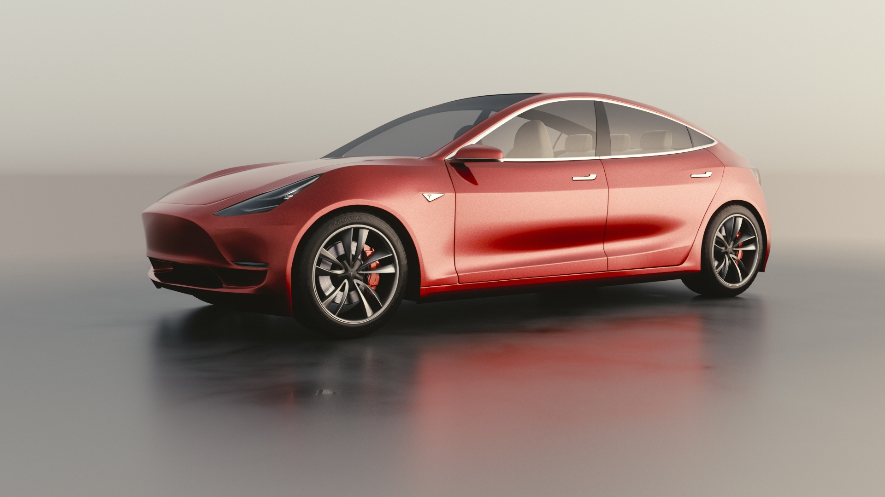
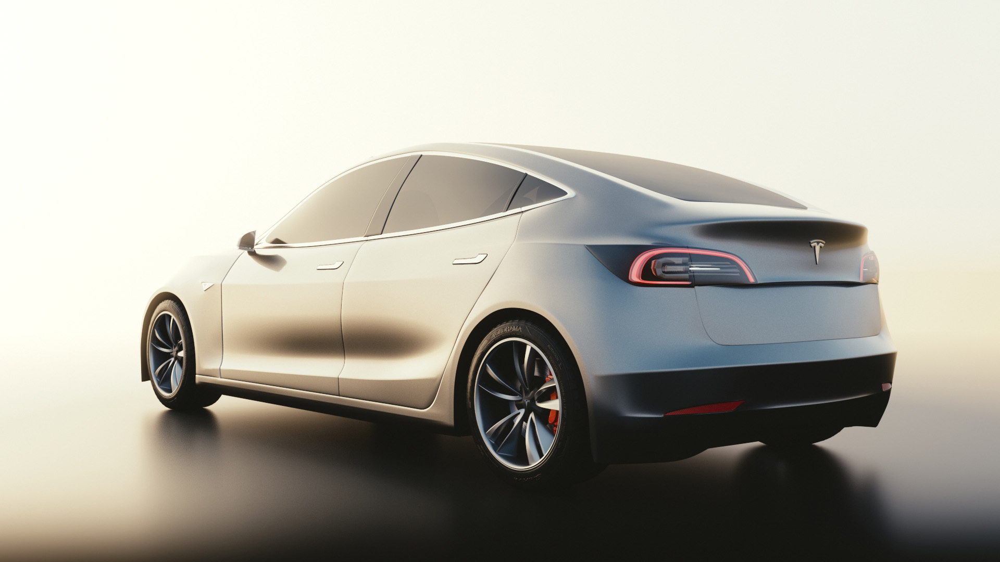
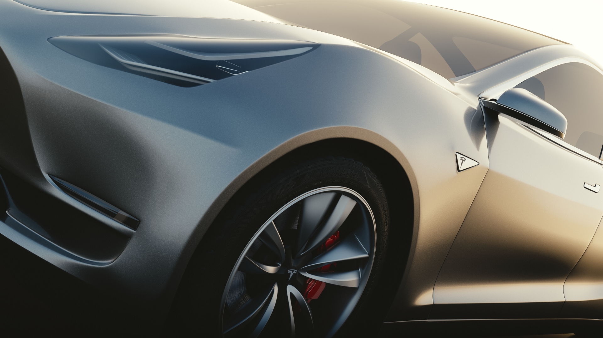
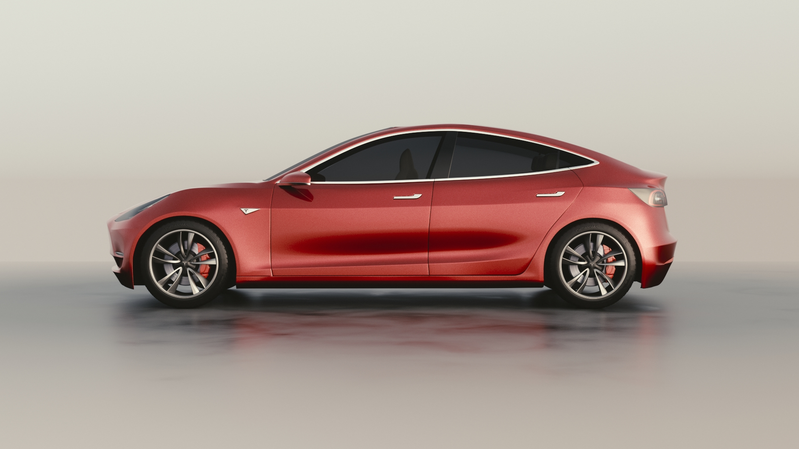
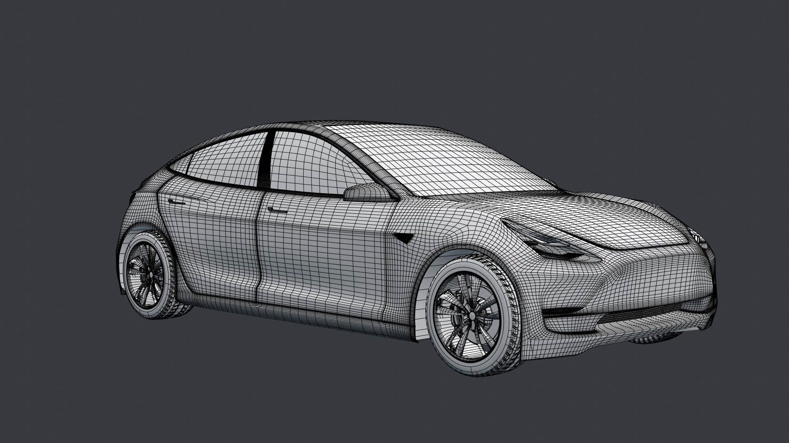

Tesla Model 3 Project
This is a passion project that I completed in my spare time.
Everything from reference gathering, to modelling, to surfacing, lighting and rendering is done by me over over the course of about 100 hours. Modeling this has been challenging because of the lack of good references. The proportions are espeically difficult due to the lack of any planar drawings.
 The focus of the project is delivering a photo-realistic rendering of the car in the most flattering lighting possible. Using Blender and Cycles Renderer allowed me to rapidly setup complex nodal materials as well as experimenting with lighting setups.    ※